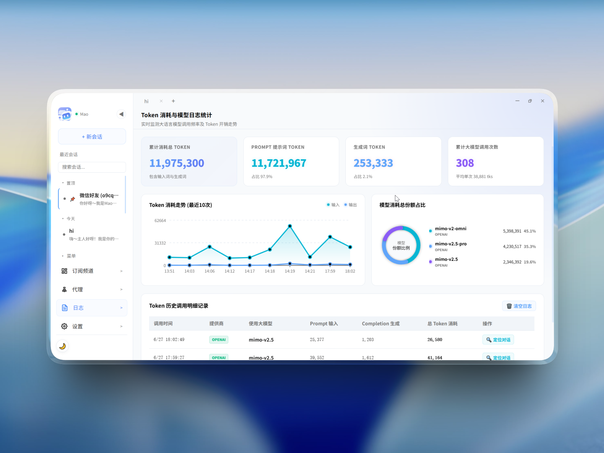
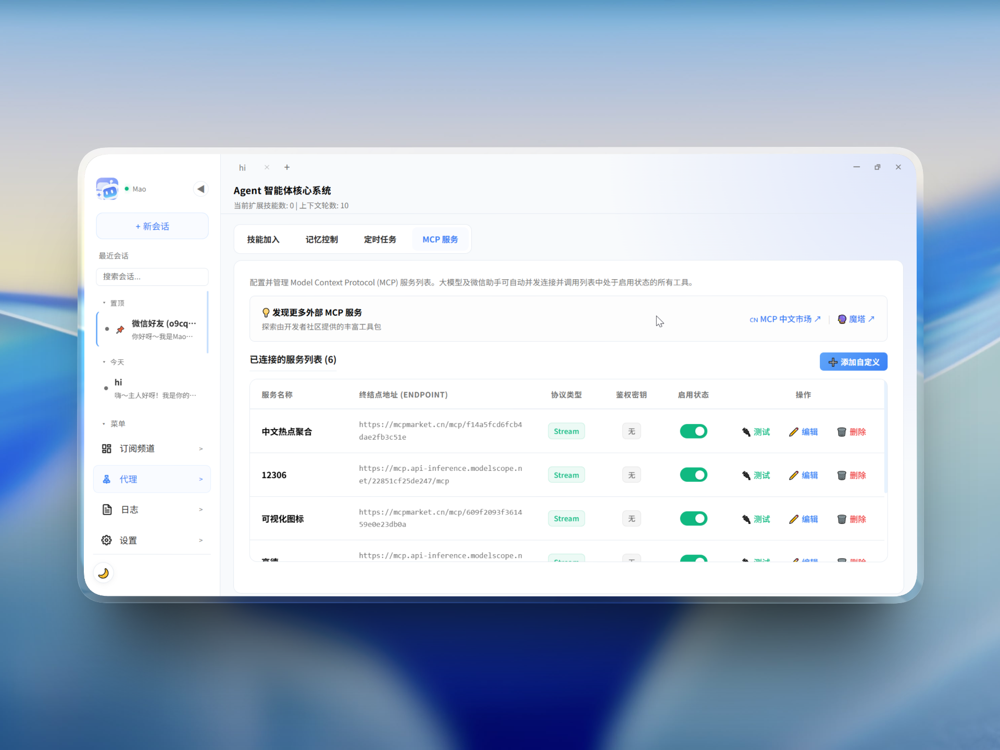
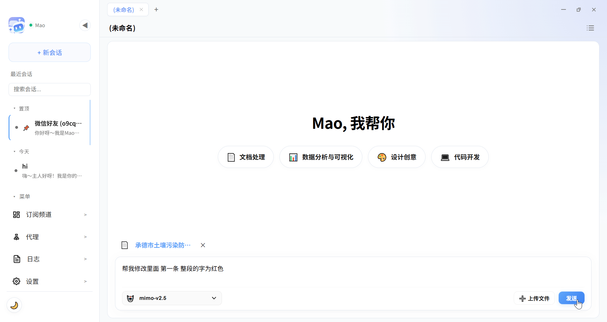
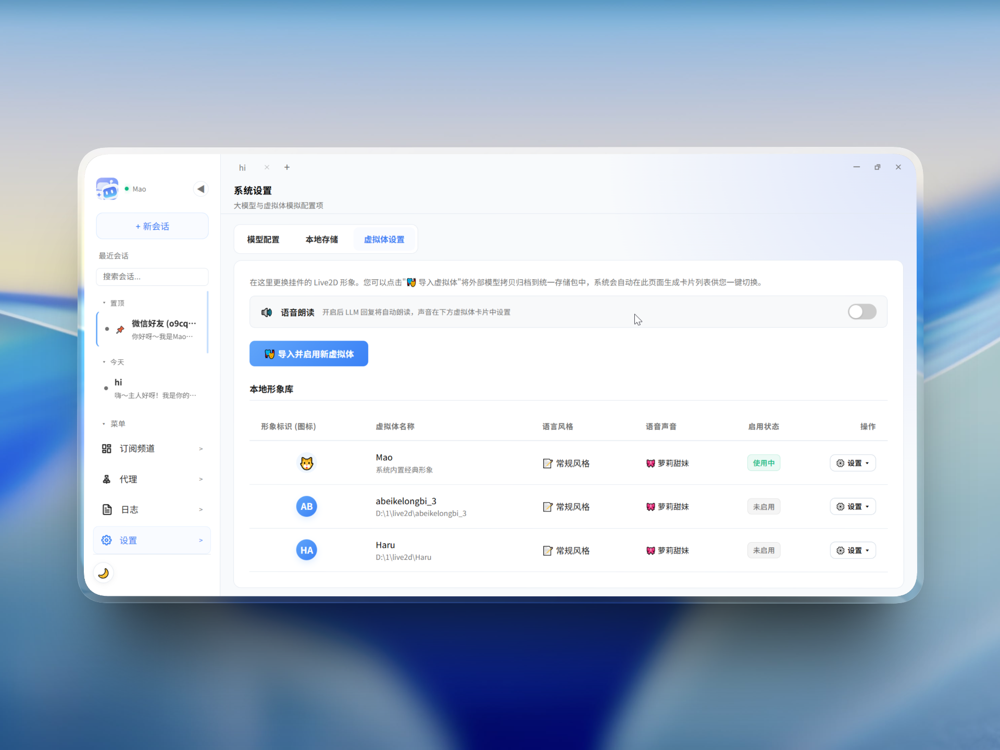
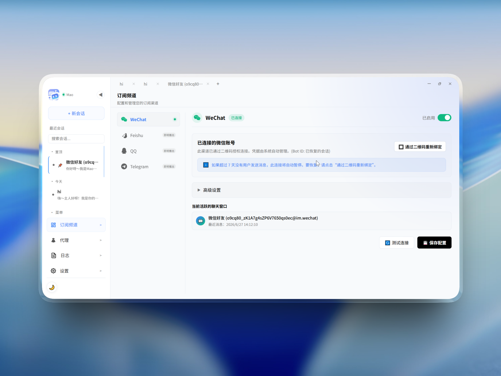

让有温度的智能，
常驻您的桌面
AgentPet 是一款基于 Electron + React + TypeScript 架构开发的开源本地桌面 AI 助理。它常驻于您的桌面，不仅提供基于 Pixi.js 的 Live2D 虚拟体陪伴与语音互动，更能集成微信飞书等代理进行 24H 消息回复、动态调用 MCP 服务、四层记忆沉淀机制；所有聊天数据均保存在本地 SQLite，保障您的数据隐私。
系统架构：主进程与渲染进程多维网络拓扑
本项目的核心是通过 IPC 通信机制实现底层原生资源与前端高帧率动画展示的双进程高效联动。
📂 Electron 双进程架构与原生通信机制
渲染-主进程物理隔离： 本系统完全基于双进程物理沙盒机制。主进程直接调用 C++ 底层原生能力和 SQLite，渲染进程仅执行受信任的 Live2D
挂件动画渲染，保证了桌面的极端流畅。
通信总线路由： 通过 Electron 高速 IPC 通道
实时桥接大模型意图命令。当渲染进程发起本地调用时，命令在主进程的安全沙盒进行静态阻断过滤，保障用户主机完全免于恶意脚本入侵。

提示词 MCP 动态注入：攻克空载 Token 浪费
传统 Agent 常驻加载工具定义极其浪费 Token。我们采用按需动态注入方案，让 API 资费与延迟直线下降 60% 以上。
🔌 按需动态注入思想与 Schema 懒连接
痛点分析： 传统智能体（Agent）通常在冷启动时将所有注册的外部工具 Schema 一次性打包注入大模型上下文中。当外部挂载数十个 MCP
工具时，这会产生庞大且无谓的常驻空载 Token 浪费。
解决方案： AgentPet 独创了动态按需注入机制：
• 静态零占用： 日常会话时完全不向大模型声明任何外部 MCP 工具的定义，保持极度轻量化的上下文空间。
• 意图触发懒连接： 仅当大模型在对话中识别到需要执行特定复杂意图（如查询本地 12306、绘制可视化图表等）时，主进程才瞬间与对应 MCP 服务建立 SSE 握手连接，并将该工具
Schema 动态注入当前会话上下文。
• 动态垃圾回收： 执行结束后自动裁切精简工具描述，避免冗余 Schema 在长对话中重复产生 Token 开销。


本地工具支撑：构建更智能的应用
深度整合本地系统环境，让大模型具备直接操作文件与资源的执行力，将自然语言转化为桌面级智能助理的生产力。
🛠️ 本地文件解析与智能编辑
原生能力调用： 基于 Electron 主进程的 Node.js 原生权限，打破传统 Web 智能体无法触达本地的壁垒。
无缝办公协助： AI 可根据您的自然语言指令，自动在本地进行代码检索、文件修改或文本创作，让繁杂的文书与开发工作轻松完成。
安全隔离审计： 所有本地写操作均经过安全沙盒防爆与用户显式授权确认，在享受极客级智能的同时确保您的核心数据万无一失。

Live2D 与 TTS 注入：物理鼠标穿透与快捷会话
支持一键热插拔 Live2D 形象，运用本地声学分析器提取音量振幅，为用户带来桌面极速流式会话体验。


🎭 智能鼠标穿透与桌宠快捷会话交互
WebGL 鼠标穿透： 传统透明 Electron 挂件即使在完全透明的区域也会拦截鼠标点击。本项目通过 WebGL gl.readPixels
实时读取鼠标指针下像素的 RGBA Alpha 通道值。若 Alpha > 10，判定为触碰角色身体；否则开启鼠标穿透，彻底解决背景桌面操作被遮挡的问题。
桌宠快捷会话： 大模型生成流式答复后，主进程结合 node-edge-tts 本地语音合成与 Web Audio 物理频域分析器，实时驱动 Live2D
形象的骨骼参数，提供高度逼真的即时对话反馈。
资源自定义映射： 采用主进程注册的自定义 live2d:// 协议读取资源，完美避开本地跨域 CORS 限制。
第三方通讯集成
集成微信官方合规的 iLink 平台连接器，支持 24H 静默流式答复，并具备富媒体 CDN 物理加密上传机制；同时架构已预留多平台标准化扩展能力。
💬 微信官方 iLink 通道与富媒体加密直传
微信合规官方 iLink： 不同于市面上易被封号的网页版协议或注入式破解方案，AgentPet 主进程直连微信官方 Node 服务平台连接器
@openilink/openilink-sdk-node，保证托管安全零风险。
腾讯 CDN 封包加密算法： 为了在微信中发送智能体生成的图片、截图或表格，文件在本地首先通过随机 16 字节密钥的 AES-128-ECB
进行物理加密，再通过 HTTP POST 直传至腾讯 CDN 服务器，保障了富媒体信息的合规分发。
多维记忆存储： 所有通过微信和飞书托管拉取并代答的消息记录均采用本地 SQLite 本地持久化，隐私数据安全可控。
后续多平台生态接入： 核心通信网关已完成标准化抽象，未来版本将陆续无缝接入飞书、钉钉、企业微信及 Discord 等主流通讯协作平台，打造跨生态的全天候智能助理。

自研四层记忆设计：数据本地化长期经验沉淀
基于 Better-SQLite3 高性能本地数据库，构建四层记忆沉淀机制，保障智能体对上下文及长期偏好的精准检索。
基于 Better-SQLite3 高性能本地存储，坚守数据隐私本地化，将对话上下文及核心状态物理留存于用户物理硬盘。
在会话切换或空闲时，触发智能论述归纳，提炼当前对话的核心经验、结论与未完待续的任务线，写入本地记忆链。
后台定时分析多维多轮对话历史，进行动态画像重构，定时生成用户特征画像、称呼喜好、执行频率与协作任务档案。
结合向量特征与传统全文索引的混合检索，模拟 Wiki 知识关联网，自动进行历史上下文与知识的语义关联检索，达到快速回忆。
💾 自研四层记忆设计与本地隐私坚守
坚守本地化隐私： AgentPet 坚信用户的隐私数据归用户所有。所有的聊天记录、四层记忆画像、本地文档提取产物及微信聊天代理数据，全部安全存储于本地的高性能 SQLite
中。您可以一键导出或自定义特定盘符进行物理数据迁移。
四层记忆优势：
不同于传统 Agent 随用随扔的上下文缓存，本系统通过由浅入深的 SQLite 物理层递进，实现了在零云端泄露的前提下，大模型对长期偏好和过去复杂任务线的精准“回忆”与持续经验积累。